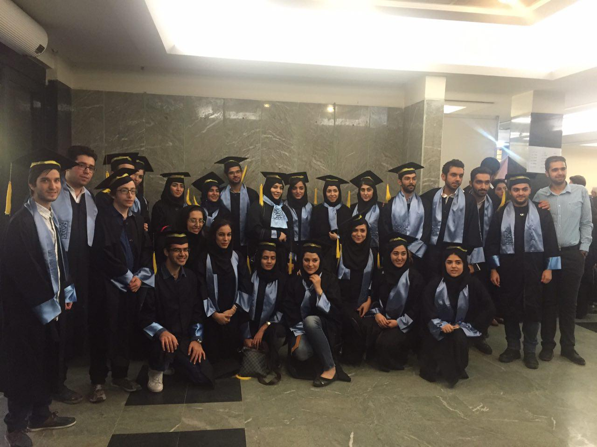

I received my B.Sc. in computer science from Shahid Beheshti University with GPA of 17.44/20 (3rd place) in 2016. After that, I started my M.Sc. in Computer
Science (Decision Science and Knowledge Engineering) at University of Tehran. My GPA is 18.93/20 (1st place) or 4/4.
As a member of KDD Lab, I am working on Machine Learning, Deep Learning, Natural Language Processing, Graph Modeling and their applications
in financial markets prediction. My M.Sc. thesis subject is “Using Deep Learning in Financial Markets Prediction”. More specifically, it focuses on
feature extraction from various financial data using Convolutional Neural Networks and the correlation between them.
Research Interests: Machine Learning, Deep Learning, Computational Finance, Social Networks, Natural Language Processing, Game Theory
About
Education
M.SC. Computer Science
University of Tehran 2016-2019
GPA: 18.93/20 - 4/4
Ranked 1st according to GPA
Thesis: Using Deep Learning in Financial Markets Prediction
Supervisor: Dr. Saman Haratizadeh
B.SC. Computer Science
Shahid Beheshti University - 2012-2016
GPA: 17.43/20 - 3.66/4
Ranked 3rd according to GPA
Thesis: A survey on bitcoin
Supervisor: Dr. Ziba Eslami
Experience
Teaching Assistant
Machine Learning (graduate), Dr. Haratizadeh, 2018
Mining of Massive Datasets (graduate), Dr. Haratizadeh, 2018
Machine Learning (graduate), Dr. Haratizadeh, 2017
Fundamentals of Soft Computing (graduate), Dr. Veisi, 2017
Fundamentals of Computing Theory (undergrad), Dr. Farahani, 2016
Theory of Computation (undergrad), Dr. Farahani, 2016
Fundations of Programming (undergrad), Dr. Izadi, 2013
Research Assistant
KDD Lab - University of Tehran - 2016-present
Under supervision of Dr. Saman Haratizadeh, I have been working on Machine Learning, Deep Learning, Natural Language Processing, Graph Modeling and their
applications in financial markets prediction.
Publications & Projects
M.Sc. Thesis
Hoseinzade E, Haratizadeh S. "CNNPred: CNN-based stock market prediction using several data sources" Expert systems with applications.
(Under review, full length paper)
Abstract: Feature extraction from finnancial data is one of the most important problems
in market prediction domain for which many approaches have been suggested.
Among other modern tools, convolutional neural networks (CNN) have recently
been applied for automatic feature selection and market prediction. However,
in experiments reported so far, less attention has been paid to the correlation
among different markets as a possible source of information for extracting features.
In this paper, we suggest a CNN-based framework with specially designed
CNNs, that can be applied on a collection of data from a variety of sources, including
different markets, in order to extract features for predicting the future
of those markets. The suggested framework has been applied for predicting
the next days direction of movement for the indices of S&P 500, NASDAQ,
DJI, NYSE, and RUSSELL markets based on various sets of initial features.
The evaluations show a significantly improvement in predictions performance
compared to the state of the art baseline algorithms.
Hoseinzade E, Haratizadeh S. "HCNNPred: CNN-based stock market prediction using hierarchy
training and universal feature extractor" (Under preparation, full length paper)
HCNNpred is a novel framework based on Convolutional Neural Network which consists of three sections. First, applying CNN which is trained
in a regular manner on the input data (outperforms baseline algorithms). Second, improving accuracy of prediction using a hierarchy
training of CNN (outperforms step 1). Third, prediction of stocks using universal feature extractor (outperforms baseline algorithms).
To measure performance of HCNNpred, we have used 458 stocks in S&P 500 index as well as 5 major indices of U.S. market.
Prediction of stock markets using feature representation and semi-supervised models (Ongoing)
Main purpose of this undergoing project is to predict daily directional movement of various
stocks and commodities around the world using graph-based semi-supervised models and
feature representation based on deep learning.
Miscellaneous
Hoseinzade E, Haratizadeh S. "Prediction of Dow-Jones Stocks Using
Genetic Algorithm and Regression with Huber Loss Function" (Under preparation, Persian)
Abstract: Prediction of financial markets is a difficult task due to it’s noisy behavior. Technical Analysts
have been able to get better results by taking advantage of empirical rules. However, human’s limited ability
in extracting complicated principles makes it useful to utilize artificial intelligence algorithms in order to
find more valuable principles. Vast domain of prediction rules makes it almost impossible to search all of it
and because of that researchers have used search techniques algorithms like genetic algorithm to does this search
in a reasonable time. In this paper genetic algorithm is used to generate optimal principles for prediction of
stock markets. Extracted rules as well as regression with Huber loss function that is appropriate for noisy data
like stock market are responsible for evaluation of 30 stocks in Dow-Jones index. Then, one stock is chosen as
the best one for investment in the next week. The proposed algorithm, not only outperformed baseline algorithms
so that it is statistically proven, but also gained about 14% return during a period of 3 months.
Forecasting stock markets using text mining
In this project, 25 most important topics of each day were converted to feature vectors
through text mining techniques. Different classifiers utilized extracted feature vectors for
prediction of Dow Jones Industrial Average. Results showed up to 59% accuracy.
Prediction of Iran’s stock market
Main purpose of this project was to predict sell and buy probability of 100 various stocks
using different deep learning and machine learning approaches. Corresponding data came
from Tadbir broker. In case of directional accuracy, I was able to get up to 65% accuracy.
Prediction of Iranian presidential election, 2017
Our team predicted presidential election using 1.5 million posts of various channels of the
Telegram.The results were satisfying and relatively close to the actual results of the election.
Prediction of return of commodities
In this project, I used Naive Bayes to predict the returns of various commodities
based on historical data. I got around 67% accuracy in forecasting the returns.
Data of this of project came from Data Mining Cup (Germany-2014).
Honors & Awards
Full scholarship of the Big Data Economics summer school, Iran, See Website
Ranked 10th in National Graduate Entrance Examination in Computer Science (Decision Science & Knowledge Engineering), Iran
Offered Admission to Computer Science M.Sc. Program at Shahid Beheshti University without Entrance Examination.
10th Place in Asia Regional ACM-ICPC (International Collegiate Programming Contest), Asia Tehran Site
Playing Chess: I used to be a professional chess player who participated in various chess tournaments. Currently, I play chess for fun and take part in tournaments that are held at university
Reading Books: What I am looking for in different books is the way successful people have handled various problems that they have faced during their life.
Following News: I usually follow daily news of Iran and world through both Iranian and International news agencies. From time to time, I read articles in Economist, Forbes ...
Hiking:Tochal Mountain and Darband are among the greatest places for hiking near Tehran. Sometimes, I go there with my friends to have fun and spend time with them.
Gallery

Graduation Ceremony at Shahid Beheshti University We studied computer science together for four years
New Year's ceremony at Shahid Beheshti University This event is organized by scientific assosciation of computer science students every year
On the way of Tochal mountain Tehran, Iran
Celebrating Teacher's day (Dr. Haratizadeh) Graduate students and alumnus of KDD Lab